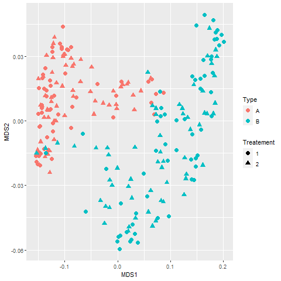

<!--landing page for bio-->

<!DOCTYPE html>
<html lang="en-us"></html>

<head>
    <meta charset="UTF-8">
    <title>Home</title>
    <link rel="stylesheet" type="text/css" href="styles.css">
</head>

<!--<header>
    <h1>Nick Wornson - Last Updated 10/29/2024</h1>
</header>
-->
<main class="container">
    <section id="main-bio">
      <section id="figure">
        
        
      </section>

      <p> A graduate of the Masters in Statistics program at the University of Minnesota in summer 2019, I have a passion for leveraging data-driven insights.  
        Most recently I was employed with a start-up called <a href="https://www.loambio.com/us/" target="_blank"> Loam Bio</a> as a Statistician.  Before that I was
        working for the Minnesota Department of Health (MDH) in the Covid-19 Emergency Preparedness and Response department as a Data Analyst.  
        During and immediately after graduate school I did a lot of work with a research lab in the Dept. of Plant Pathology at the UMN, where the lab performed various experiments, 
        then passed the data off to me for ETL and statistical analysis.  <a href="https://journals.plos.org/plosone/article?id=10.1371/journal.pone.0287990" target="_blank"> Here</a> 
        is one such publication that I co-authored by contributing analysis.  At this point in time, all the data and associated analyses for Loam and UMN are proprietary so data 
        will not be included here.  I also helped teach an evening course in Data Visualization, where we taught students a variety of tools ranging from Excel and 
        VBA to Python to Web design.  In addition to Data Science, I also enjoy soccer, disc golf, science-fiction and cooking.  This page is meant to contain a few of my 
        professional and personal projects from the last few years.  </p>


      <h2>Loam Bio</h2>  

        <p> Loam Bio is a start-up founded in Australia and making its way to the US in 2022.  Unfortunately it's US presence was dissolved in August 2024.  I was employed as a 
          Statistician from March of 2023 to August 2024.  
          My role there required me to use my skills and limited technical resources to design, analyze and report on hundreds of experiments.  
          My analyses were conducted independently, and scaled up through extensive use of R and R Shiny and GCP for cloud storage.  A typical analysis included, 
          but wasn’t limited to, visualizations, Fixed and Mixed Effects linear modeling, Multiple Hypothesis testing, and Normality checking.  
          In more niche situations, with more covariates, I used Multiple Regression and Tree/Ensemble models for prediction and inference on the covariates, 
          as well as unsupervised methods for data exploration.   </p>

        <p>The nature of a small start-up can bring many challenges.  My position was global, and at the time I was hired I was the only one in my field.  I had to hit the 
          ground running, learning everything I could about Loam's goals and the industry as a whole, while cranking out statistical analyses one by one and reviewing past work the company
          had done.  My first accomplishment (in my opinion), was getting everyone to mostly agree on how we look at our data once an experiment concludes.  Previously it had been
          a perpetualy unfinished discussion.  This allowed me to create templates with R Markdown that could be applied generically to all incoming data from field trials. Second, I was
          able to establish myself not only as a statistician, but as an authority on the data itself.  Through building relationships with our field teams, scientists and product managers, 
          I was able to assess the validity of datasets.  This is important in a fast moving environment where mistakes are rampant.   
        </p>

        <p>Working in a global capacity also taught me how to manage priorities.  Australia began their work day 
          about the time that the US was ending theirs.  The two markets were also, effectively, equally important
          but managed by different teams.  Working for both markets required careful planning and documentation.  We used
          Asana project mgmt software, where I could lay out the tasks and give indication of progress with transparency and documentation.  
          Communication was still crucial though, mostly done over Slack.  In situations where I could not balance the full 
          work load, I would have to consult our very busy Global Product Manager and go through a quick priority check, and 
          also look for anywhere to delegate the simple tasks.   
        </p>

        <p>My work at Loam led to the selection of two products to be commercialized (<a href="https://www.loambio.com/au/products/carbonbuilder-inoculum/wheat/" target="_blank">Here is one</a>), one in the US and one in AU.  In addition, the analysis methods that I used were the foundation
          for internal automation of experimental results.  Alongside a newly hired data science team, we created an end to end data pipeline that finished with an interactive dashboard
          and downloadable raw results.  
         </p>

      <h2>MN Dept of Health Daily Dashboard</h2>

      <p>From the start of the COVID-19 pandemic in early 2020 to late 2022 all hospitals and health facilities were required to report pertinent data to federal government (HHS/CDC).
          In MN we aided in this data collection process, and MDH had created a number of internal and extrnal dashboards depicting the then current Covid situation.  
          Roughly 70 data points were collected from each hospital daily across all of MN.  This allowed us a dynamic insight into the trends emerging that could be used to 
          influence policy and resource management.</p>

      <p>  My job had been to liason with the hospitals, health facilities and federal agencies, make sure the data looked good, and assist my team in putting out meaningful
         dashboards.  This involved querying custom datasets, cleaning and manipulating with R, running quality checks with R and Tableau, creating the dashboards with Tableau,
          and publishing to the server.  The link below shows the public facing dashboards and raw data for download.  </p>
      
      <a href="https://www.health.state.mn.us/diseases/coronavirus/stats/hosp.html"  target="_blank">MDH Covid Hospital Situation</a>  

      <h2>Plant Pathology</h2>
      
      <p> What can we learn about the interaction between microbes using optical density readings and genetic composition?  Generally speaking, that was the main question my lab sought to explore.  Sorting through a flurry of scientific terms I had never before heard in my life, I was to perform the data work in support of their research, and advise on statistical methodology.   </p>

      <p> The experiment that I primarily worked on consisted of samples from a research field here in Minnesota.  Across the field were plots (blocks) and within each plot were soil amended plants and control plants crossed with two separate species in sub-plots.  Samples were collected from each sub-plot and examined in the lab for nutrient consumption, inhibition, genetic composition, and a few other measures.  Nutreint consumption was of special interest, not only to us, but to other labs as well.  The process involves using a machine to expose a sample to 95 different nutrients plus a control and record the optical density (ODS).  My first challenge was ETL (Extract, Transform, Load).  I had to aggregate all of the raw xlsx output files from each sample, aggregate them, and merge the resulting data set with experiment data (treatment, species, plot, subplot).  After that we had a few different metrics we were interested in including the number of ODS readings that a given sample scored above a threshold, the mean and variance of ODS readings for a given sample, and whats called Percent Niche Overlap (PNO).  PNO is a useful proxy for measuring competition between microbes.  Mathematically, for samples X and Y, we can calculate Y overlapping X over k nutrients using this formula:</p>          
      
      
      <p>Applying this formula to each isolate combination effectively gives us a distance matrix.  
        Presented with data of this structure, and given we have two types and a treatment, we can apply an unsupervised 
        learning method such as NMDS (Non-metric Multi-Dimensional Scaling), which is common in fields such as Ecology where we want to study community interaction.
        NMDS can give us a visual idea of common variation within and between treatment groups.  Below is an example of an visualizing the first two MDS vector output,
        in this case using euclidean distance between
        pairwise ODS readings.</p>
      
      
      <h2>Flu Shot Learning: Predict H1N1 and Seasonal Flu Vaccines</h2>

      <p>This is a data competition put on by DrivenData where competitors are challenged to predict the probability that an individual would receive an h1n1 and/or a seasonal flu vaccine.  The competition can be found <a href="https://www.drivendata.org/competitions/66/flu-shot-learning/" target="_blank">here</a>.  The data, mostly opinions and behaviors such as flu concern and mask behavior as well as demographics, contains 36 total columns and 26707 observations. </p>

      <p> The competition is purely predictive, so as of yet I have not produced any inference or data visualizations.  Challenges here include missing data, selecting the best model and efficiently coding for two response variables.  Currently I place ~215 out of ~1700 with a score of .8497, the top score being about .866.  Scoring is computed using area under the ROC curve and averaged over seasonal and h1n1.  All my work can be found in this <a href="https://github.com/nwornson/DrivenData-Flu-Shot-Predictions/" target ="_blank">repo.</a>  In addition, below are a couple of R markdown files looking at different approaches to prediction. <p>         <a href="assets\elastic_cv.html"  target="_blank">Elastic-Net Logistic Regression</a>  <br>

      <a href="assets\xgboost.html"  target="_blank">Gradient Boosting with Cross-Validation</a>  
      
      
      <h2>Deep Learning Experiment </h2>
      <h3>Feature Representation With Small Sample Sizes in Convolutional Neural Networks</h3>
      
      <p>The thesis for my Masters details the motivation, research, approach, procedure, and results of a two part project completed in the Spring of 2019 at the University of Minnesota.  This project started out as a contract job for a local company called LAB 651 where we explored deep learning solutions to automated defect detection.  About two months into the job it was realized that training data would not be sufficient by June 2019, and this project would need to be modified to become meaningful.  Anticipating that LAB 651 may need to contend with small sample sizes, we performed a small experiment to see if using different models in the last layer of a Convolutional Neural Network (CNN) could help to battle small sample sizes.  The alternate models included a Random Forest Classifier and a Support Vector Classifier.  Results suggest that they do slightly better on a complex network, and noticeably better on a less complex network. </p>

      <p> Results below show the comparison in accuracy over 5 model fits at each sample size, each model was fit on a random sample taken from the whole training dataset, as well as a plot of the standard errors.  The above graphic shows the results from a more complex CNN model, the lower showing a less complex CNN where the difference in models used on the feature representation can be visibly distinguished.</p>      

      
      <div id = 'chart1'></div>

      <div id = 'chart2'></div>
    </section>
        <aside id="contact-info">
          <h2>Contact Info</h2>
          <ul>
            <li><strong>Email:</strong> <a href="mailto:nick.wornson@gmail.com" target="_blank">Nick.Wornson@gmail.com</a></li>
            <li><strong>Github:</strong> <a href="https://github.com/nwornson" target="_blank">nwornson</a></li>
            <li><strong>Linkedin:</strong> <a href="https://linkedin.com/in/nick-wornson-26b8826a" target="_blank">Nick Wornson</a></li>
            <!--<li><strong></strong> <a href="gallery/index.html" target="_blank">Photo Gallery</a></li>-->
    
          </ul>
        </aside>


  </main>
  <script src="https://d3js.org/d3.v5.min.js"></script>
	<script src="https://cdnjs.cloudflare.com/ajax/libs/d3-tip/0.7.1/d3-tip.min.js"></script>
		
  <script type="text/javascript" src="static/D3_1.js"></script>
  <script type="text/javascript" src="static/D3_2.js"></script>


</body>

</html>